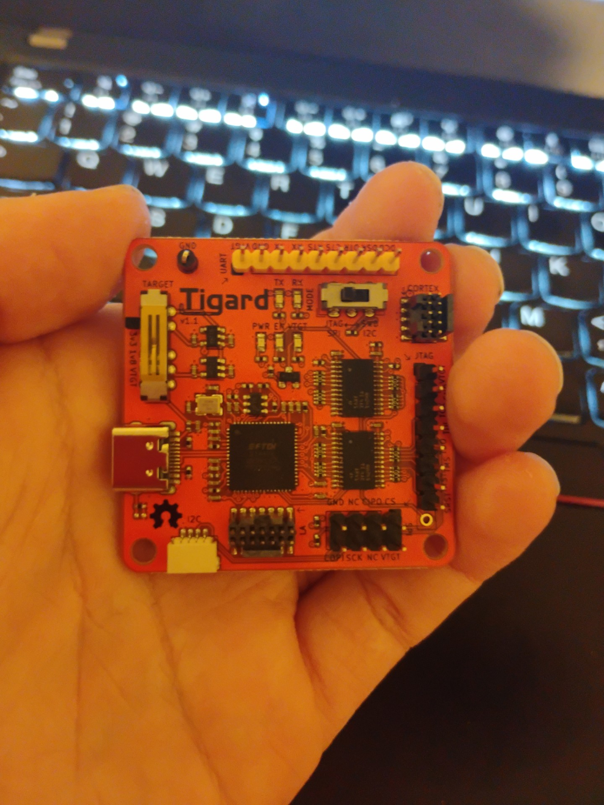
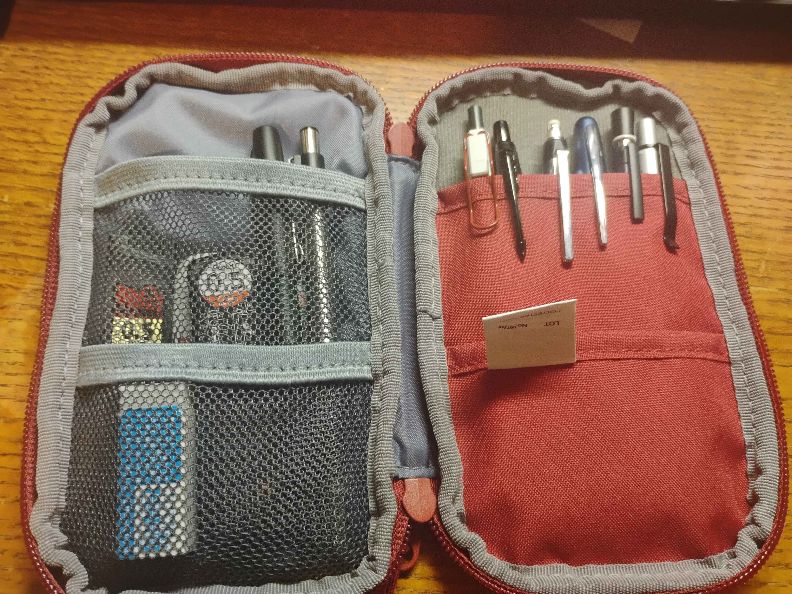
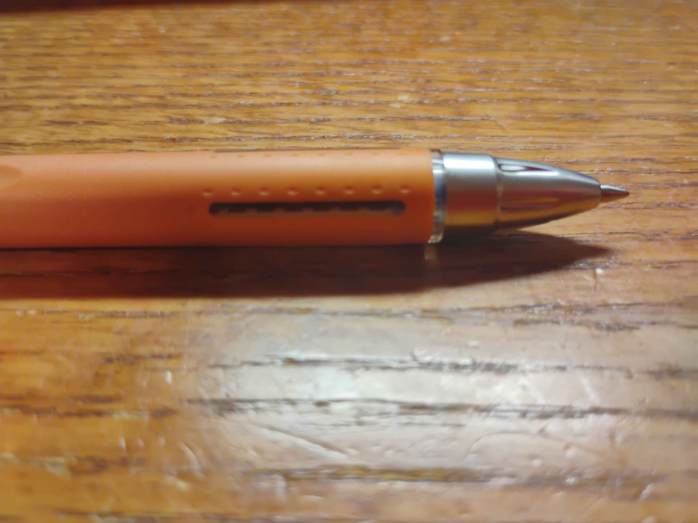
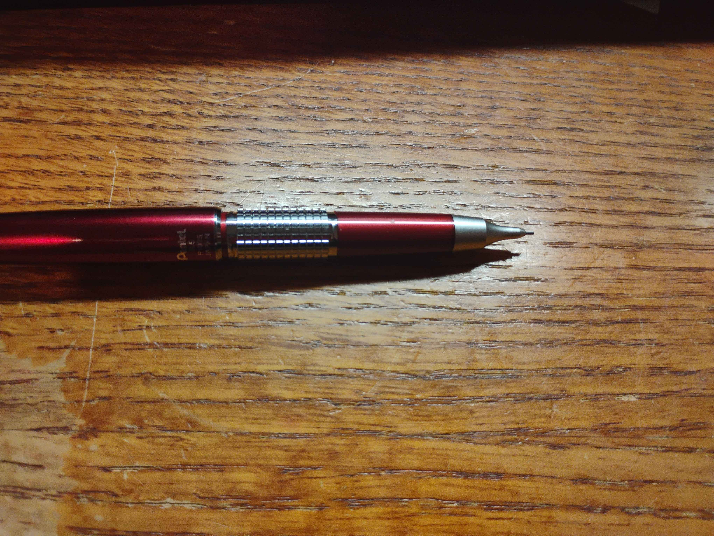

About Me:
Welp, guess I have to write about myself even though I am quite boring and I don't like talking about myself too much.
Hello, my name is Alex (not my real name) I'm a full time university student studying Cybersecurity and Network Engineering, which basically means I spend a lot of time staring at terminals and wondering why something suddenly broke.
When I'm not tippy, tapping on a keyboard, I'm probably sleeping, eating, or thinking about sleeping and eating. I'm a simple creature.

What I Love Doing:
I do loveeeeeeeeeeeeeeeeeeee hardware... like, way more than a healthy amount. My long term goal is to get into hardware hacking, especially IoT devices, routers, ARM boards, and anything that lets me poke around with some pointy objects and break things on purpose. Also, lets me melt things.
I also write a lot of scripts and my own programs. Bash is my current language that I am mostly using, but Go is my favorite. Maybe one day I'll actually finish one of the side projects sitting in my “half-broken but promising” folder aka Tools folder (last I checked it is over 90 gb where I store tools I found and archived, but also my own projects.)
Career Goals:
Career wise, I have no idea. :D
And because food is important, here are my top favorites (in order, because this is a serious business):
- Pizza
- Sushi
- Shrimp
- Salmon
Education:
Cranston High School West
Cranston, Rhode Island
Attended from 2016 - 2018
High School Diploma Recieved in 2018
Private Catholic School
Mt. Pleasant, Michigan
Attended from 2014 - 2016
Hobbies:
Outside of classes and sleeping like a champion, I do have a few hobbies. Some of them are:
- Retro gaming and collecting older consoles
- Modding ROMs and experimenting with firmware
- Hardware tinkering and exploring tools like JTAG/UART
And because each of these spiraled into full-blown obsessions, here's the longer version that explains more in detail:
I have been getting into retro consoles. I recently ordered a custom PSP 2000, which is probably the start of a dangerous new obsession. There are so many older games from the early 2000s and earlier that I absolutely adore, like Ocarina of Time, Wind Waker, Crash Bandicoot, and a whole pile of others that live rent free in my brain because of this beautiful thing called ✨ nostalgia ✨.
I also want to get into modding ROMs and maybe the firmware itself on these consoles. Reverse engineering things and adding my own weird little creations sounds like a great time, and also a great way to break something important at three in the morning and prevents it from booting.
A lot of my free time does go into computer hardware projects. Whenever I can, I pick up new devices to take apart or poke at. Recently I have been messing around with tools like the Tigard and learning how JTAG and UART work. It is basically me sitting there with wires everywhere, hoping I do not accidentally summon smoke.

Pens and Pencils:
One of my newer hobbies is diving into the very niche world of pens and pencils. I am especially into mechanical pencils, ballpoint pens, and fountain pens. There is a surprisingly wholesome community around all of it, and there are so many different kinds of lead, paper, erasers, and writing tools that it became a whole new rabbit hole. It is weirdly relaxing and also extremely fun once you fall into it.


